library(tidyverse)
set.seed(123) # Semente de numeros aleatorios para reprodutibilidade
temperatura <- 25:45 # Temperatura variando de 25 a 45 graus Celsius
consumo_energia <- 50 + 2.5 * temperatura + rnorm(21, mean = 0, sd = 5)
dados <- data.frame(temperatura, consumo_energia)Aplicações Básicas e Intermediárias em IA com R
Este capítulo apresenta uma visão abrangente das aplicações práticas da Inteligência Artificial (IA) utilizando o R. Cobrindo desde técnicas básicas até métodos intermediários, ele oferece aos leitores uma base sólida em teoria e prática. Os tópicos incluem Regressão Linear e Logística, Árvores de Decisão e Florestas Aleatórias, além de uma introdução a Redes Neurais. O capítulo também discute as tendências e avanços recentes em Machine Learning, proporcionando aos leitores insights sobre as futuras inovações no campo da IA.
Regressão Linear
A regressão linear é um método fundamental tanto em estatística quanto em machine learning. Ela é utilizada para modelar a relação entre uma variável de saída (dependente) contínua e uma ou mais variáveis de entrada (independentes). Esse método estabelece uma equação linear que descreve a relação entre essas variáveis, permitindo a previsão de valores da variável de saída com base em novos dados de entrada. Apesar de sua simplicidade, a regressão linear é uma ferramenta poderosa para análises preditivas e é frequentemente o ponto de partida para muitos estudos e análises em diversos campos (Zbicki and Santos 2020; James et al. 2023; Burger 2018).
Conceito: A ideia central da regressão linear é encontrar a melhor reta (ou, em casos de múltiplas variáveis independentes, um plano ou hiperplano) que se ajuste aos dados observados.
A reta (plano ou hiperplano) é obtida minimizando a diferença entre os valores reais observados nos dados e os valores previstos pelo modelo. Essa minimização geralmente é realizada através do método dos mínimos quadrados, buscando reduzir a soma dos quadrados das diferenças entre os valores observados e os previstos. Esse método fornece uma maneira eficiente de estimar os coeficientes do modelo linear, oferecendo uma previsão confiável baseada nas variáveis independentes (Singh and Allen 2016; Zbicki and Santos 2020).
A regressão linear é valiosa tanto para visualizar tendências quanto para fazer previsões. Ao ajustar uma linha a um conjunto de pontos de dados, ela facilita a visualização e a compreensão da relação entre as variáveis. Esta técnica se torna especialmente útil em grandes conjuntos de dados, onde pode ser desafiador identificar padrões. Por meio da regressão linear, torna-se mais simples discernir a relação entre variáveis, proporcionando informações que podem guiar análises mais profundas e decisões baseadas em dados (Singh and Allen 2016; Zbicki and Santos 2020):
Interpretação Gráfica: A linha de regressão em um gráfico oferece uma interpretação visual imediata da relação entre as variáveis. Por exemplo, uma linha de regressão ascendente indica uma relação positiva, significando que à medida que uma variável aumenta, a outra também tende a aumentar.
Identificação de Anomalias: Além de revelar tendências, a regressão linear ajuda a identificar outliers ou anomalias nos dados, que são pontos significativamente afastados da linha de regressão.
As aplicações práticas da regressão linear são vastas, abrangendo áreas como economia, meteorologia, saúde e mais, fornecendo previsões valiosas e insights para tomadas de decisão (Singh and Allen 2016; Zbicki and Santos 2020).
Previsões Baseadas em Dados: Ao ajustar um modelo de regressão linear, é obtido uma equação que pode ser usada para fazer previsões. Por exemplo, em um modelo de regressão linear simples, essa equação pode ter a forma \(y=mx+b\), em quende \(y\) é a variável de sáida (dependente), \(x\) é a variável de entrada (independente), \(m\) é a inclinação e \(b\) é o intercepto da linha de regressão.
Aplicações Práticas: As previsões têm inúmeras aplicações práticas em diversos campos, como economia (previsão de tendências de mercado), meteorologia (previsão de temperaturas futuras), saúde (previsão de taxas de recuperação de pacientes), entre muitos outros.
Ao trabalhar com regressão linear, é crucial considerar alguns aspectos importantes (Singh and Allen 2016; Chan 2015):
Qualidade dos Dados: A eficácia da regressão linear está diretamente relacionada à qualidade dos dados utilizados. Dados imprecisos, incompletos ou com erros podem resultar em previsões falhas ou enganosas.
Relações Lineares: A regressão linear é ideal para situações em que a relação entre as variáveis é de fato linear. Se a relação for não-linear, modelos de regressão linear podem não ser adequados. Nestes casos podem ser aplicados modelos de regressão não linear e outras técnicas de machine learning podem ser mais apropriadas.
Relações Lineares: A regressão linear é ideal para situações onde há uma relação linear entre as variáveis .Em cenários onde essa relação é não-linear a aplicação de modelos de regressão não linear ou outras técnicas de machine learning pode ser mais apropriada, permitindo uma modelagem mais precisa das complexidades inerentes aos dados.
Causalidade vs. Correlação: É importante lembrar que a regressão linear por si só não implica causalidade. Ela pode identificar correlações entre variáveis, mas isso não implica uma relação de causa e efeito direta.
Exemplo Prático
Ajuste de modelo de regressão
Vamos considerar um conjunto de dados hipotético que representa uma cidade durante um verão particularmente quente. O objetivo é analisar a relação entre a temperatura média diária (em graus Celsius) e o consumo total diário de energia elétrica (em megawatts-hora). Espera-se que essa relação seja aproximadamente linear, com o consumo de energia aumentando à medida que as temperaturas se tornam mais altas.
Para ilustras, vamos gerar alguns dados simulados em R para representar esta situação:
Vamos ajustar um modelo de regressão linear e visualizá-lo com pacote ggplot2(Wickham 2016) :
Call:
lm(formula = consumo_energia ~ temperatura, data = dados)
Residuals:
Min 1Q Median 3Q Max
-9.2185 -2.9014 -0.6606 2.9560 9.2535
Coefficients:
Estimate Std. Error t value Pr(>|t|)
(Intercept) 55.5938 6.3488 8.757 4.27e-08 ***
temperatura 2.3522 0.1787 13.160 5.37e-11 ***
---
Signif. codes: 0 '***' 0.001 '**' 0.01 '*' 0.05 '.' 0.1 ' ' 1
Residual standard error: 4.96 on 19 degrees of freedom
Multiple R-squared: 0.9011, Adjusted R-squared: 0.8959
F-statistic: 173.2 on 1 and 19 DF, p-value: 5.371e-11ggplot(dados, aes(x = temperatura, y = consumo_energia)) +
geom_point() +
geom_smooth(method = "lm", se = FALSE) +
theme_minimal() +
labs(title = "Relação entre Temperatura e Consumo de Energia",
x = "Temperatura Média Diária (°C)",
y = "Consumo de Energia (MWh)")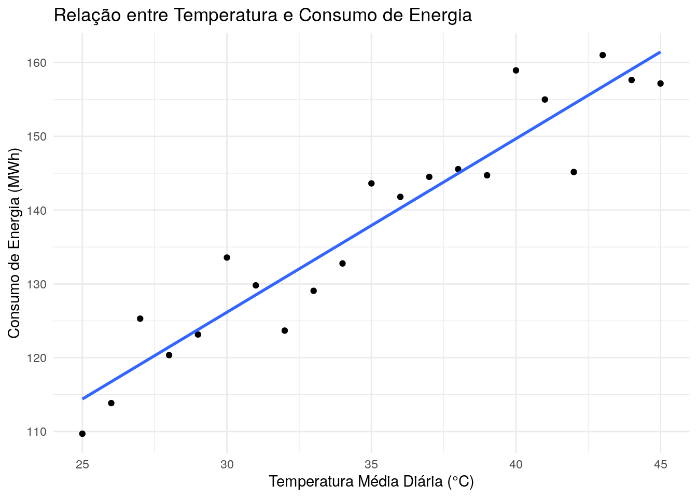
Neste exemplo, o modelo de regressão é representado pela equação \(y=2.35+55.59\) e ilustrado pela linha no gráfico, destacando a relação entre temperatura e consumo de energia. Os pontos no gráfico representam os dados observados, enquanto a linha demonstra a tendência geral. Isso sugere que existe uma correlação positiva entre o aumento da temperatura e o aumento no consumo de energia, com a linha de regressão oferecendo uma visualização clara dessa tendência.
Aplicação de Modelos de Regressão Linear para Previsões
Utilizando o mesmo exemplo da relação entre temperatura e consumo de energia, agora vamos explorar como o modelo de regressão linear pode ser usado para fazer previsões. O objetivo é estimar o consumo de energia com base na temperatura.
Primeiro, ajustamos o modelo de regressão linear, como fizemos anteriormente:
modelo <- lm(consumo_energia ~ temperatura, data = dados)Com o modelo ajustado, podemos usar a função predict() predict() para fazer previsões. Por exemplo, se quisermos prever o consumo de energia para uma temperatura de 25.5, 28.2, 30, 38.5 graus Celsius, fazemos o seguinte:
temperatura_nova <- data.frame(temperatura = c(25.5,28.2,30,38.5))
previsao_consumo <- predict(modelo, newdata = temperatura_nova)
previsao_consumo 1 2 3 4
115.5744 121.9253 126.1593 146.1528 Isso nos dará a previsão de consumo de energia para a temperatura especificada.
É útil visualizar as previsões juntamente com os dados originais e a linha de regressão. Isso pode ser feito ajustando o gráfico que criamos anteriormente:
dados1=cbind(temperatura_nova,previsao_consumo)
ggplot(dados, aes(x = temperatura, y = consumo_energia)) +
geom_point() +
geom_smooth(method = "lm", se = FALSE) +
geom_point(data=dados1,aes(x =temperatura, y = previsao_consumo),
colour = "red",size=3)+
theme_minimal() +
labs(title = "Previsão de Consumo de Energia com Regressão Linear",
x = "Temperatura Média Diária (°C)",
y = "Consumo de Energia (MWh)")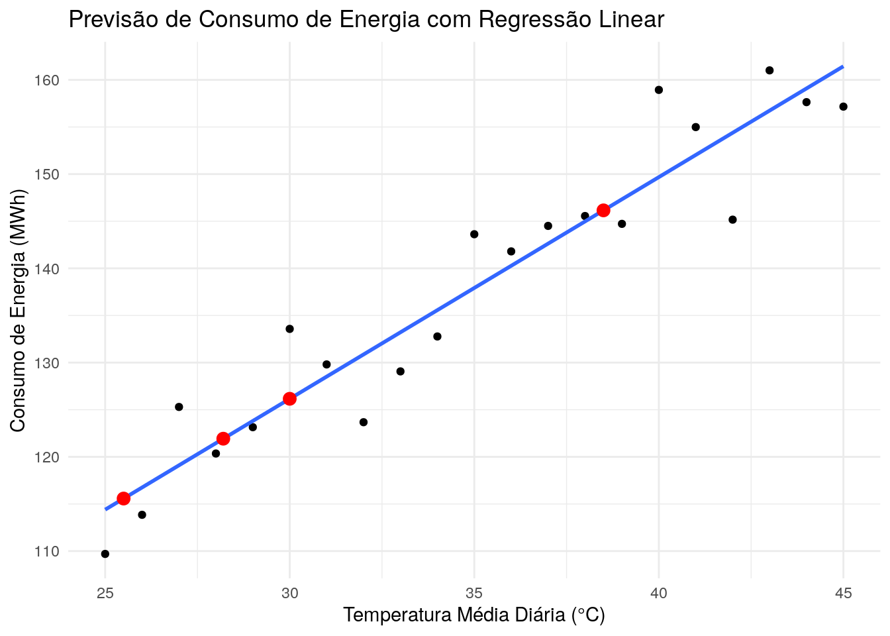
No gráfico, o ponto vermelho representa a previsão de consumo de energia para a temperatura especificada.
Regressão Logística
A regressão logística é uma técnica estatística usada para modelar a probabilidade de ocorrência de um evento, categorizando o resultado em classes. Esta técnica é empregada para variáveis dependentes categóricas binárias, como “sim” ou “não”, e “sucesso” ou “fracasso”. Ela difere da regressão linear, que prevê valores contínuos, ao estimar a probabilidade de um evento ocorrer, baseando-se em um ou mais preditores. A regressão logística é particularmente útil em classificadores de aprendizado de máquina, sendo um componente chave dos modelos lineares generalizados(Zbicki and Santos 2020; James et al. 2023; Burger 2018).
A regressão logística, utilizada no contexto de classificadores, pode ser expressa matematicamente para uma classe binária da seguinte maneira:
\[ Y_i = 1 \Rightarrow P( Y_i=1)=\pi_i\\ Y_i = 0 \Rightarrow P( Y_i=0)=1-\pi_i\\ \]
O modelo de regressão logistica é dado por: \[ \pi(X)=\frac{e^{\beta_0+\beta_1X_1+\beta_2X_2+...+\beta_mX_m}}{1+e^{\beta_0+\beta_1X_1+\beta_2X_2+...+\beta_mX_m}} \]
em que \(X\) representa o conjunto de atributos ou variáveis de entrada.
Ao trabalhar com regressão logística, é crucial considerar aspectos importantes como:
Relação entre Variáveis: Este método é eficaz quando há uma relação clara entre as variáveis independentes e a variável dependente binária. As variáveis independentes podem ser categóricas ou quantitativas, mas para variáveis quantitativas, é importante verificar se existe uma relação log-log.
Multicolinearidade: É essencial evitar alta correlação entre as variáveis independentes, pois isso pode comprometer a interpretação dos coeficientes do modelo.
Avaliação do Modelo: Para avaliar a precisão e eficácia do modelo, deve-se usar métricas apropriadas, como a área sob a curva ROC (AUC).
Exemplo Prático
Implementação no R
No R, a função glm() com a família binomial é comumente usada para realizar regressão logística.
Para ilustrar a utilização da regressão logistica, vamos utilizar o conjunto de dados PimaIndiansDiabetes2 pacote mlbench (Leisch and Dimitriadou 2021). Este conjunto de dados contém informações de testes de diabetes coletadas de mulheres com pelo menos 21 anos, de herança indígena Pima e residentes próximas a Phoenix, Arizona, totalizando 768 observações em 9 variáveis
pregnant: Número de vezes grávida.
glucose: Concentração de glicose plasmática (teste de tolerância à glicose).
pressure: Pressão arterial diastólica (mm Hg).
triceps: Espessura da dobra da pele do tríceps (mm).
insulin: Insulina sérica de 2 horas (mu U/ml).
mass: Índice de massa corporal (peso em kg/(altura em m)^2).
pedigree: Função de pedigree de diabetes.
age: Idade (anos).
diabetes: Fator indicando o resultado do teste de diabetes (neg/pos)
O conjunto de dados PimaIndiansDiabetes2 contém informações incompletas para alguns indivíduos, ou seja, nem todas as variáveis foram observadas em todos os casos. Portanto, vamos optar por trabalhar apenas com os dados completos, o que reduz o conjunto a 392 observações. Essa abordagem nos permite realizar análises mais precisas e confiáveis, focando em dados onde todas as variáveis estão presentes.
Pacotes Necessários
Prepararando os dados
#Ler os dados e remover os NA
data("PimaIndiansDiabetes2", package = "mlbench")
PimaIndiansDiabetes2 <- na.omit(PimaIndiansDiabetes2)
# Inspecionar os dados
sample_n(PimaIndiansDiabetes2, 3) pregnant glucose pressure triceps insulin mass pedigree age diabetes
225 1 100 66 15 56 23.6 0.666 26 neg
515 3 99 54 19 86 25.6 0.154 24 neg
646 2 157 74 35 440 39.4 0.134 30 neg# Dividir o conjuntos de dados em treino e teste
set.seed(123)
training.samples <- PimaIndiansDiabetes2$diabetes %>%
createDataPartition(p = 0.8, list = FALSE)
train.data <- PimaIndiansDiabetes2[training.samples, ]
test.data <- PimaIndiansDiabetes2[-training.samples, ]Regressão Logística Simples
A regressão logística simples é usada para prever a probabilidade de pertencer a uma classe com base em apenas uma variável preditora.
O seguinte código R constrói um modelo para prever a probabilidade de ser positivo para diabetes com base na concentração de glicose plasmática:
Call:
glm(formula = diabetes ~ glucose, family = binomial, data = train.data)
Coefficients:
Estimate Std. Error z value Pr(>|z|)
(Intercept) -6.158820 0.700097 -8.797 < 2e-16 ***
glucose 0.043272 0.005341 8.102 5.42e-16 ***
---
Signif. codes: 0 '***' 0.001 '**' 0.01 '*' 0.05 '.' 0.1 ' ' 1
(Dispersion parameter for binomial family taken to be 1)
Null deviance: 398.8 on 313 degrees of freedom
Residual deviance: 305.7 on 312 degrees of freedom
AIC: 309.7
Number of Fisher Scoring iterations: 4O resultado apresenta a estimativa dos coeficientes beta da regressão e seus níveis de significância. O intercepto (\(\beta_0=-6,15\)) e o coeficiente da variável glicose $_1= 0,043$.
A equação logística pode ser escrita como
\[ \pi(X)=\frac{e^{-6,15+0,043Glucose}}{1+e^{-6,15+0,043Glucose}} \]
Usando esta fórmula, para cada novo valor de concentração de glicose plasmática, é possível prever a probabilidade de os indivíduos serem positivos para diabetes.
train.data %>%
mutate(prob = ifelse(diabetes == "pos", 1, 0)) %>%
ggplot(aes(glucose, prob)) +
geom_point(alpha = 0.2) +
geom_smooth(method = "glm", method.args = list(family = "binomial")) +
labs(
x = "Concentração de glicose plasmática",
y = "Probability de diabestes positiva"
)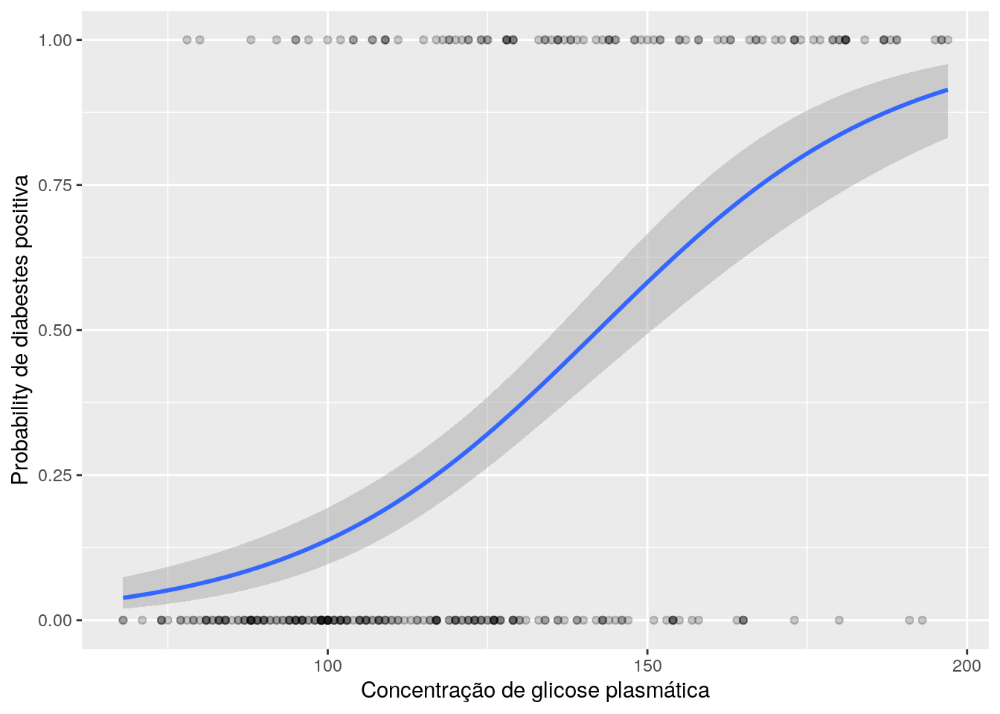
Podemos avaliar a capacidade preditiva do modelo utilizando os dados que ele já conhece através do seguinte processo no R:
# Predições
probabilities <- model %>%
predict(type = "response")
predicted.classes <- ifelse(probabilities > 0.5, "pos", "neg")
# Avaliando a acurácia
mean(predicted.classes == train.data$diabetes)[1] 0.7611465O resultado apresenta uma acurácia de 0,7611 para os dados de treinamento, , indica que o modelo é eficaz em classificar corretamente se um indivíduo tem ou não diabetes.
Podemos avaliar o modelo com os dados de teste, que são novos para o modelo ou seja desconhecidos.
# Prediçõess
probabilities <- model %>%
predict(test.data, type = "response")
predicted.classes <- ifelse(probabilities > 0.5, "pos", "neg")
# Avaliando a acurácia
mean(predicted.classes == test.data$diabetes)[1] 0.7692308Ao aplicar o modelo aos dados de teste, que são novos para o modelo, obtemos uma acurácia de 0,7692. Isso sugere que o modelo mantém uma boa performance geral também para dados que não foram usados no treinamento, demonstrando sua eficiência e capacidade de generalização.
Regressão Logística Multipla
A regressão logística multipla é usada para prever a probabilidade de pertencer a uma classe com base em múltiplas variáveis preditoras.
O seguinte código R constrói um modelo para prever a probabilidade de ser positivo para diabetes com base na concentração de glicose plasmática, número de vezes grávida e índice de massa corporal :
model <- glm( diabetes ~ glucose+ pregnant+mass, data = train.data, family = binomial)
summary(model)
Call:
glm(formula = diabetes ~ glucose + pregnant + mass, family = binomial,
data = train.data)
Coefficients:
Estimate Std. Error z value Pr(>|z|)
(Intercept) -9.323698 1.125997 -8.280 < 2e-16 ***
glucose 0.038862 0.005404 7.191 6.43e-13 ***
pregnant 0.144667 0.045126 3.206 0.00135 **
mass 0.094585 0.023530 4.020 5.83e-05 ***
---
Signif. codes: 0 '***' 0.001 '**' 0.01 '*' 0.05 '.' 0.1 ' ' 1
(Dispersion parameter for binomial family taken to be 1)
Null deviance: 398.80 on 313 degrees of freedom
Residual deviance: 279.88 on 310 degrees of freedom
AIC: 287.88
Number of Fisher Scoring iterations: 5O resultado apresenta a estimativa dos coeficientes beta da regressão e seus níveis de significância. O intercepto (\(\beta_0=-9,32\)), o coeficiente da variável glicose $_1= 0,038$, o coeficiente da variável número de vezes grávida $_2= 0,144$ e o coeficiente da variável índice de massa corporal $_3= 0,094$
A equação logística pode ser escrita como
\[ \pi(X)=\frac{e^{-9,32+0,038Glucose+0,144pregnant+0,094mass}}{1+e^{-9,32+0,038Glucose+0,144pregnant+0,094mass}} \]
Avaliando a capacidade preditiva do com os dados de treino e teste:
# Predições conjunto de treinamento
probabilities <- model %>%
predict(type = "response")
predicted.classes <- ifelse(probabilities > 0.5,
"pos", "neg")
# Avaliando a acurácia
mean(predicted.classes == train.data$diabetes)[1] 0.7866242#Prediçõess
probabilities1 <- model %>%
predict(test.data, type = "response")
predicted.classes1 <- ifelse(probabilities1 > 0.5, "pos", "neg")
# Avaliando a acurácia
mean(predicted.classes1 == test.data$diabetes) [1] 0.7820513O resultado, com uma acurácia de 0,7866 para os dados de treinamento e 0,7820 para os dados de teste, indica que o modelo de regressão logística múltipla tem uma boa capacidade de generalização. Além disso, a acurácia mais alta do modelo múltiplo em comparação com o modelo simples sugere uma melhoria na performance preditiva ao incluir múltiplas variáveis preditoras.
Árvores de Decisão
As árvores de decisão são um método gráfico e analítico que subdivide uma amostra inicial em subamostras, formando grupos onde a variável de resposta apresenta comportamento homogêneo internamente e heterogêneo entre eles. Este algoritmo de aprendizado de máquina supervisionado é aplicável tanto para classificação quanto para regressão, ou seja, pode prever tanto categorias discretas (como “sim” ou “não”) quanto valores numéricos (Singh and Allen 2016; Zbicki and Santos 2020):.
Funcionando de maneira semelhante a um fluxograma , as árvores de decisão têm nós de decisão interconectados hierarquicamente, incluindo um nó-raiz principal e nós-folha que representam os resultados finais. No machine learning, o nó-raiz corresponde a um atributo da base de dados, enquanto o nó-folha indica a classe ou valor a ser previsto (Singh and Allen 2016; Zbicki and Santos 2020).
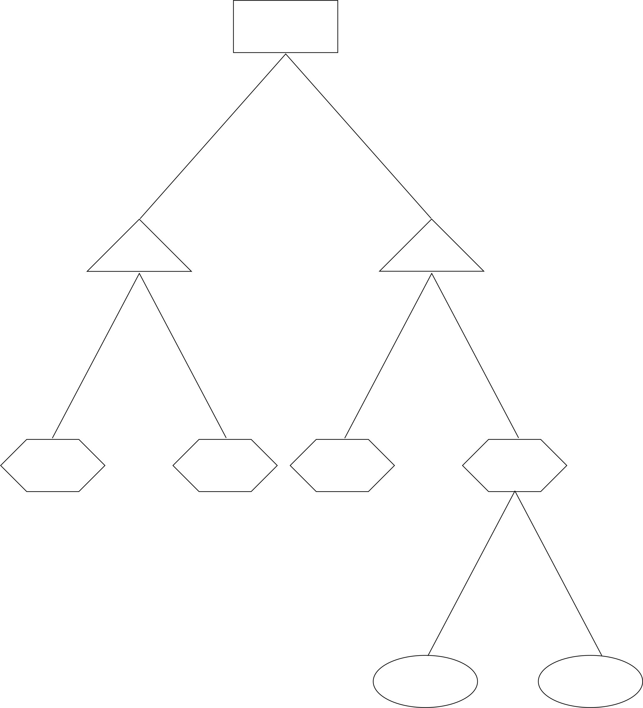
Existem diversos algoritmos para a criação de árvores de decisão, sendo os mais comuns:
CHAID (Chi-square Automatic Interaction Detection): Este algoritmo é mais comumente usado para tarefas de classificação.Utiliza tabelas de contingência para identificar as melhores divisões.
CART (Classification and Regression Trees): Um dos algoritmos mais versáteis, o CART é utilizado tanto para regressão quanto para classificação. Sua abordagem binária para dividir os nós permite uma ampla gama de aplicações.
ID3 (Iteractive Dichotomizer 3): Geralmente aplicado em tarefas de classificação, mas existem versões para regressão, o ID3 seleciona atributos com base no Ganho de Informação, escolhendo aqueles que mais reduzem a incerteza no conjunto de dados.
C4.5: Uma evolução do ID3, o C4.5 inclui melhorias como o tratamento de dados contínuos e valores ausentes, mantendo a abordagem baseada em Ganho de Informação.
Árvores de decisão são particularmente úteis quando se deseja trabalhar com dados sem a necessidade de um tratamento extensivo. Elas lidam bem com valores atípicos e dados faltantes, reduzindo a necessidade de etapas de tratamento intensivo. Além disso, não é necessário converter dados categóricos para numéricos, pois este algoritmo lida eficientemente com informações nominais. Em situações que envolvem problemas tanto de classificação quanto de regressão, as árvores de decisão oferecem flexibilidade e eficácia, tornando-se uma escolha adequada para uma variedade de cenários analíticos.
Exemplo Prático
Implementação no R
Para ilustrar a utilização arvore de decisão, vamos utilizar o conjunto de dados PimaIndiansDiabetes2 pacote mlbench (Leisch and Dimitriadou 2021), apresentado na seção anterior.
Pacotes Necessários
Prepararando os dados,
#Ler os dados e remover os NA
data("PimaIndiansDiabetes2", package = "mlbench")
PimaIndiansDiabetes2 <- na.omit(PimaIndiansDiabetes2)
# Inspecionar os dados
sample_n(PimaIndiansDiabetes2, 3) pregnant glucose pressure triceps insulin mass pedigree age diabetes
221 0 177 60 29 478 34.6 1.072 21 pos
72 5 139 64 35 140 28.6 0.411 26 neg
172 6 134 70 23 130 35.4 0.542 29 pos# Dividir o conjuntos de dados em treino e teste
set.seed(123)
training.samples <- PimaIndiansDiabetes2$diabetes %>%
createDataPartition(p = 0.8, list = FALSE)
train.data <- PimaIndiansDiabetes2[training.samples, ]
test.data <- PimaIndiansDiabetes2[-training.samples, ]O seguinte código R constrói um modelo de árvore de decisão para prever se um indivíduo é positivo para diabetes com base em todas as variáveis preditoras disponíveis no conjunto de dados. Isso é realizado utilizando o operador ~ para incluir todas as variáveis preditoras:
Call:
rpart(formula = diabetes ~ ., data = train.data, method = "class")
n= 314
CP nsplit rel error xerror xstd
1 0.30769231 0 1.0000000 1.0000000 0.08019147
2 0.05769231 1 0.6923077 0.7115385 0.07231416
3 0.04166667 3 0.5769231 0.7211538 0.07264930
4 0.02884615 6 0.4519231 0.7692308 0.07424287
5 0.01000000 8 0.3942308 0.8173077 0.07570578
Variable importance
glucose age insulin pressure pregnant triceps mass pedigree
37 19 17 11 7 5 2 1
Node number 1: 314 observations, complexity param=0.3076923
predicted class=neg expected loss=0.3312102 P(node) =1
class counts: 210 104
probabilities: 0.669 0.331
left son=2 (198 obs) right son=3 (116 obs)
Primary splits:
glucose < 127.5 to the left, improve=34.61298, (0 missing)
insulin < 126.5 to the left, improve=23.56122, (0 missing)
age < 28.5 to the left, improve=20.18536, (0 missing)
mass < 34.05 to the left, improve=11.06798, (0 missing)
pregnant < 6.5 to the left, improve=10.83097, (0 missing)
Surrogate splits:
insulin < 125.5 to the left, agree=0.755, adj=0.336, (0 split)
age < 34.5 to the left, agree=0.694, adj=0.172, (0 split)
pregnant < 5.5 to the left, agree=0.672, adj=0.112, (0 split)
pressure < 81 to the left, agree=0.672, adj=0.112, (0 split)
mass < 45.95 to the left, agree=0.640, adj=0.026, (0 split)
Node number 2: 198 observations, complexity param=0.02884615
predicted class=neg expected loss=0.1515152 P(node) =0.6305732
class counts: 168 30
probabilities: 0.848 0.152
left son=4 (139 obs) right son=5 (59 obs)
Primary splits:
age < 29.5 to the left, improve=4.887386, (0 missing)
insulin < 143.5 to the left, improve=4.058442, (0 missing)
mass < 45.4 to the left, improve=3.738038, (0 missing)
pedigree < 0.6775 to the left, improve=3.112899, (0 missing)
glucose < 103.5 to the left, improve=2.719190, (0 missing)
Surrogate splits:
pregnant < 4.5 to the left, agree=0.854, adj=0.508, (0 split)
mass < 45.7 to the left, agree=0.722, adj=0.068, (0 split)
pedigree < 0.9215 to the left, agree=0.722, adj=0.068, (0 split)
glucose < 119.5 to the left, agree=0.717, adj=0.051, (0 split)
insulin < 173 to the left, agree=0.717, adj=0.051, (0 split)
Node number 3: 116 observations, complexity param=0.05769231
predicted class=pos expected loss=0.362069 P(node) =0.3694268
class counts: 42 74
probabilities: 0.362 0.638
left son=6 (80 obs) right son=7 (36 obs)
Primary splits:
glucose < 165.5 to the left, improve=6.575096, (0 missing)
mass < 29.5 to the left, improve=6.442471, (0 missing)
triceps < 32.5 to the left, improve=5.826207, (0 missing)
age < 24.5 to the left, improve=4.923350, (0 missing)
pregnant < 6.5 to the left, improve=2.073976, (0 missing)
Surrogate splits:
age < 52 to the left, agree=0.716, adj=0.083, (0 split)
insulin < 452.5 to the left, agree=0.707, adj=0.056, (0 split)
pressure < 104 to the left, agree=0.698, adj=0.028, (0 split)
pedigree < 1.764 to the left, agree=0.698, adj=0.028, (0 split)
Node number 4: 139 observations
predicted class=neg expected loss=0.07913669 P(node) =0.4426752
class counts: 128 11
probabilities: 0.921 0.079
Node number 5: 59 observations, complexity param=0.02884615
predicted class=neg expected loss=0.3220339 P(node) =0.1878981
class counts: 40 19
probabilities: 0.678 0.322
left son=10 (37 obs) right son=11 (22 obs)
Primary splits:
insulin < 142.5 to the left, improve=6.932245, (0 missing)
glucose < 108.5 to the left, improve=3.843730, (0 missing)
pedigree < 0.514 to the left, improve=2.531230, (0 missing)
mass < 26.5 to the left, improve=1.919575, (0 missing)
pregnant < 1.5 to the right, improve=1.562043, (0 missing)
Surrogate splits:
triceps < 45.5 to the left, agree=0.695, adj=0.182, (0 split)
age < 50.5 to the left, agree=0.695, adj=0.182, (0 split)
pregnant < 1.5 to the right, agree=0.678, adj=0.136, (0 split)
pedigree < 1.153 to the left, agree=0.661, adj=0.091, (0 split)
glucose < 116 to the left, agree=0.644, adj=0.045, (0 split)
Node number 6: 80 observations, complexity param=0.05769231
predicted class=pos expected loss=0.475 P(node) =0.2547771
class counts: 38 42
probabilities: 0.475 0.525
left son=12 (14 obs) right son=13 (66 obs)
Primary splits:
age < 23.5 to the left, improve=6.982251, (0 missing)
triceps < 22.5 to the left, improve=5.664103, (0 missing)
mass < 30.2 to the left, improve=5.379624, (0 missing)
pregnant < 7.5 to the left, improve=2.236497, (0 missing)
pressure < 77 to the left, improve=1.761893, (0 missing)
Surrogate splits:
mass < 25.15 to the left, agree=0.85, adj=0.143, (0 split)
Node number 7: 36 observations
predicted class=pos expected loss=0.1111111 P(node) =0.1146497
class counts: 4 32
probabilities: 0.111 0.889
Node number 10: 37 observations
predicted class=neg expected loss=0.1351351 P(node) =0.1178344
class counts: 32 5
probabilities: 0.865 0.135
Node number 11: 22 observations
predicted class=pos expected loss=0.3636364 P(node) =0.07006369
class counts: 8 14
probabilities: 0.364 0.636
Node number 12: 14 observations
predicted class=neg expected loss=0.07142857 P(node) =0.04458599
class counts: 13 1
probabilities: 0.929 0.071
Node number 13: 66 observations, complexity param=0.04166667
predicted class=pos expected loss=0.3787879 P(node) =0.2101911
class counts: 25 41
probabilities: 0.379 0.621
left son=26 (8 obs) right son=27 (58 obs)
Primary splits:
triceps < 22 to the left, improve=2.508882, (0 missing)
mass < 33.95 to the left, improve=2.205307, (0 missing)
pedigree < 0.7115 to the left, improve=1.978188, (0 missing)
pressure < 77 to the left, improve=1.382828, (0 missing)
pregnant < 1.5 to the right, improve=1.240998, (0 missing)
Surrogate splits:
mass < 23.85 to the left, agree=0.909, adj=0.25, (0 split)
Node number 26: 8 observations
predicted class=neg expected loss=0.25 P(node) =0.02547771
class counts: 6 2
probabilities: 0.750 0.250
Node number 27: 58 observations, complexity param=0.04166667
predicted class=pos expected loss=0.3275862 P(node) =0.1847134
class counts: 19 39
probabilities: 0.328 0.672
left son=54 (31 obs) right son=55 (27 obs)
Primary splits:
pressure < 77 to the left, improve=2.0487370, (0 missing)
glucose < 145.5 to the right, improve=2.0231530, (0 missing)
mass < 40.75 to the left, improve=1.2517240, (0 missing)
pedigree < 0.7115 to the left, improve=1.0115530, (0 missing)
age < 41 to the left, improve=0.9256372, (0 missing)
Surrogate splits:
triceps < 32.5 to the left, agree=0.672, adj=0.296, (0 split)
age < 31 to the left, agree=0.672, adj=0.296, (0 split)
pregnant < 4.5 to the left, agree=0.638, adj=0.222, (0 split)
pedigree < 0.866 to the left, agree=0.638, adj=0.222, (0 split)
insulin < 105 to the right, agree=0.603, adj=0.148, (0 split)
Node number 54: 31 observations, complexity param=0.04166667
predicted class=pos expected loss=0.4516129 P(node) =0.09872611
class counts: 14 17
probabilities: 0.452 0.548
left son=108 (15 obs) right son=109 (16 obs)
Primary splits:
pressure < 71 to the right, improve=7.0548390, (0 missing)
mass < 39.95 to the left, improve=1.7238860, (0 missing)
pregnant < 1.5 to the right, improve=0.8765778, (0 missing)
age < 25.5 to the right, improve=0.8765778, (0 missing)
insulin < 156 to the right, improve=0.8131720, (0 missing)
Surrogate splits:
triceps < 31.5 to the right, agree=0.613, adj=0.200, (0 split)
age < 29.5 to the right, agree=0.613, adj=0.200, (0 split)
pregnant < 3.5 to the right, agree=0.581, adj=0.133, (0 split)
glucose < 161.5 to the right, agree=0.581, adj=0.133, (0 split)
insulin < 105 to the left, agree=0.581, adj=0.133, (0 split)
Node number 55: 27 observations
predicted class=pos expected loss=0.1851852 P(node) =0.08598726
class counts: 5 22
probabilities: 0.185 0.815
Node number 108: 15 observations
predicted class=neg expected loss=0.2 P(node) =0.0477707
class counts: 12 3
probabilities: 0.800 0.200
Node number 109: 16 observations
predicted class=pos expected loss=0.125 P(node) =0.05095541
class counts: 2 14
probabilities: 0.125 0.875 Este código produz um resumo detalhado do modelo de árvore de decisão, que pode ser complexo de analisar. Para facilitar a visualização, podemos representar graficamente a árvore construída:
prp(tree_model)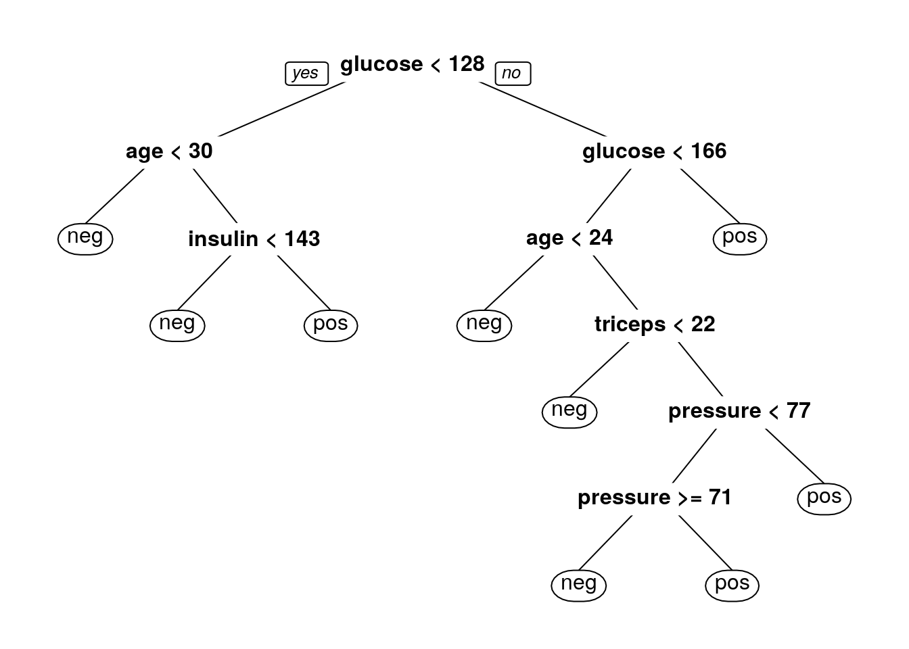
Este passo permite visualizar a estrutura da árvore de decisão de forma mais intuitiva e compreensível.
Por padrão, o rpart usa a impureza de Gini para selecionar divisões ao realizar classificação. (Se você não está familiarizado, leia este artigo.) Você pode usar o ganho de informação em vez disso, especificando-o no parâmetro parms.
tree_model1 <- rpart(diabetes ~.,data = train.data,method = "class",
parms = list(split = 'information')
)
prp(tree_model1)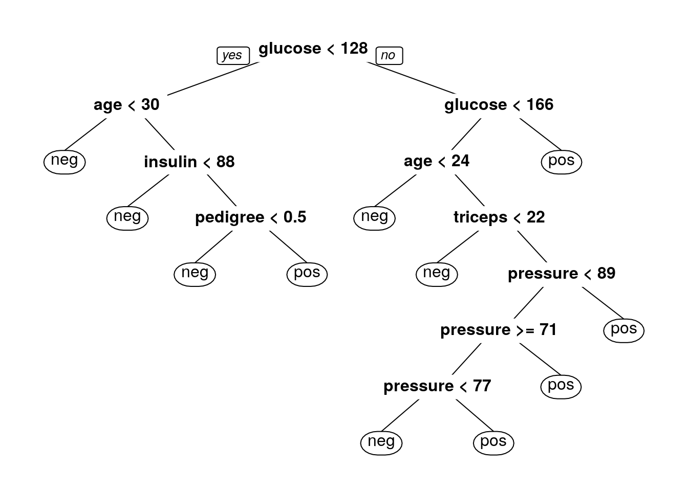
Podemos avaliar a capacidade preditiva do com os dados de treino e teste, utilizando os dados que ele já conhece através do seguinte processo no R:
# Predições de treinamento
class <- predict(tree_model1,type = 'class')
confusionMatrix(class, train.data$diabetes,positive='pos')Confusion Matrix and Statistics
Reference
Prediction neg pos
neg 194 23
pos 16 81
Accuracy : 0.8758
95% CI : (0.8341, 0.9102)
No Information Rate : 0.6688
P-Value [Acc > NIR] : <2e-16
Kappa : 0.7148
Mcnemar's Test P-Value : 0.3367
Sensitivity : 0.7788
Specificity : 0.9238
Pos Pred Value : 0.8351
Neg Pred Value : 0.8940
Prevalence : 0.3312
Detection Rate : 0.2580
Detection Prevalence : 0.3089
Balanced Accuracy : 0.8513
'Positive' Class : pos
# Predições de teste
class1 <- predict(tree_model1,test.data,type = 'class')
confusionMatrix(class1, test.data$diabetes,positive='pos')Confusion Matrix and Statistics
Reference
Prediction neg pos
neg 41 9
pos 11 17
Accuracy : 0.7436
95% CI : (0.6321, 0.8358)
No Information Rate : 0.6667
P-Value [Acc > NIR] : 0.09127
Kappa : 0.434
Mcnemar's Test P-Value : 0.82306
Sensitivity : 0.6538
Specificity : 0.7885
Pos Pred Value : 0.6071
Neg Pred Value : 0.8200
Prevalence : 0.3333
Detection Rate : 0.2179
Detection Prevalence : 0.3590
Balanced Accuracy : 0.7212
'Positive' Class : pos
O resultado, com uma acurácia de 0,8758para os dados de treinamento e 0,7436para os dados de teste, indica que o modelo de regressão logística múltipla tem uma boa capacidade de generalização. Além disso, outras medidas de performance do modelo apresentam valores elevados.
Floresta Aleatória
Floresta Aleatória é um algoritmo de aprendizado supervisionado que cria uma “floresta” de forma aleatória. Essa floresta é na verdade um conjunto de árvores de decisão, geralmente treinadas com o método de bagging. A ideia por trás do bagging é que a combinação de vários modelos de aprendizado melhora o desempenho geral.
As Florestas Aleatórias funcionam ao criar numerosas árvores de decisão aleatoriamente, cada uma contribuindo para a decisão final. Uma grande vantagem desse algoritmo é sua aplicabilidade tanto em tarefas de classificação quanto de regressão, sendo muito relevante nos sistemas de aprendizado de máquina atuais. No contexto de classificação, as Florestas Aleatórias são consideradas um dos pilares do aprendizado de máquina. Um exemplo clássico de Floresta Aleatória pode incluir diversas árvores, cada uma contribuindo para a classificação ou previsão final.
Diferenças entre Árvore de Decisão e Florestas Aleatórias
Floresta Aleatória e Árvore de Decisão são métodos de aprendizado de máquina, mas com diferenças significativas. Enquanto a Árvore de Decisão utiliza regras e nodos baseados em cálculos como ganho de informação e índice de Gini, a Floresta Aleatória opera de maneira aleatória e é uma coleção de várias árvores. Uma Árvore de Decisão única pode sofrer de sobreajuste, especialmente se for muito profunda. Em contraste, as Florestas Aleatórias minimizam o sobreajuste ao construir várias árvores menores a partir de subconjuntos aleatórios de características, combinando-as posteriormente. Este processo pode tornar as Florestas Aleatórias mais lentas, dependendo do número de árvores construídas.
Algoritmo para Florestas Aleatórias
O algoritmo das Florestas Aleatórias (Random Forest) funciona da seguinte maneira:
Gerar \(B\) amostras bootstrap com reposição do conjunto de dados original.
-
Para cada amostra bootstrap, criar uma árvore de decisão:
Em cada nó, é sorteado \(M\) atributos dentre os quais a divisão será realizada.
A árvore é construída sem ser podada.
Cada árvore gera um resultado, e a classificação/regressão final é determinada pelo resultado mais frequente entre todas as árvores.
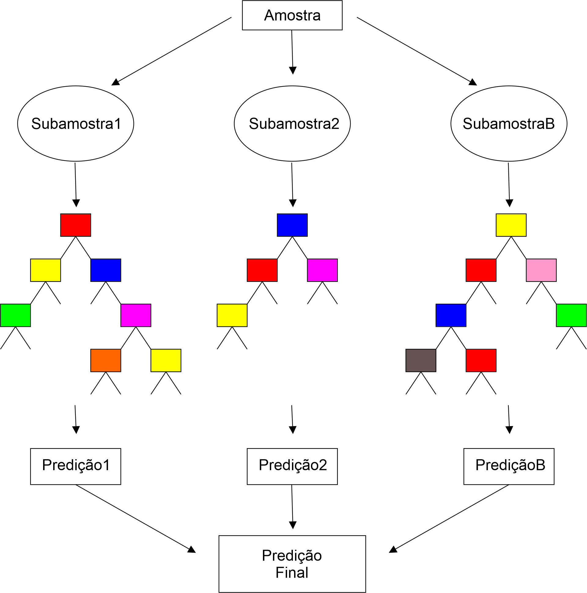
Exemplo Prático
Implementação no R
Para ilustrar a utilização arvore de decisão, vamos utilizar o conjunto de dados PimaIndiansDiabetes2 pacote mlbench (Leisch and Dimitriadou 2021), apresentado na seção anterior.
Pacotes Necessários
Prepararando os dados,
#Ler os dados e remover os NA
data("PimaIndiansDiabetes2", package = "mlbench")
PimaIndiansDiabetes2 <- na.omit(PimaIndiansDiabetes2)
# Inspecionar os dados
sample_n(PimaIndiansDiabetes2, 3) pregnant glucose pressure triceps insulin mass pedigree age diabetes
53 5 88 66 21 23 24.4 0.342 30 neg
423 0 102 64 46 78 40.6 0.496 21 neg
541 8 100 74 40 215 39.4 0.661 43 pos# Dividir o conjuntos de dados em treino e teste
set.seed(123)
training.samples <- PimaIndiansDiabetes2$diabetes %>%
createDataPartition(p = 0.8, list = FALSE)
train.data <- PimaIndiansDiabetes2[training.samples, ]
test.data <- PimaIndiansDiabetes2[-training.samples, ]O seguinte código R constrói um modelo de árvore de decisão para prever se um indivíduo é positivo para diabetes com base em todas as variáveis preditoras disponíveis no conjunto de dados. Isso é realizado utilizando o operador ~ para incluir todas as variáveis preditoras:
rf_model <- randomForest( diabetes ~., data = train.data)
print(rf_model)
Call:
randomForest(formula = diabetes ~ ., data = train.data)
Type of random forest: classification
Number of trees: 500
No. of variables tried at each split: 2
OOB estimate of error rate: 23.57%
Confusion matrix:
neg pos class.error
neg 180 30 0.1428571
pos 44 60 0.4230769Podemos avaliar a capacidade preditiva do com os dados de treino e teste, utilizando os dados que ele já conhece através do seguinte processo no R:
#Conjunto de treino
class <- predict(rf_model)
confusionMatrix(class, train.data$diabetes,positive='pos')Confusion Matrix and Statistics
Reference
Prediction neg pos
neg 180 44
pos 30 60
Accuracy : 0.7643
95% CI : (0.7134, 0.8102)
No Information Rate : 0.6688
P-Value [Acc > NIR] : 0.00014
Kappa : 0.4493
Mcnemar's Test P-Value : 0.13073
Sensitivity : 0.5769
Specificity : 0.8571
Pos Pred Value : 0.6667
Neg Pred Value : 0.8036
Prevalence : 0.3312
Detection Rate : 0.1911
Detection Prevalence : 0.2866
Balanced Accuracy : 0.7170
'Positive' Class : pos
#Conjunto de teste
class1 <- predict(rf_model,test.data)
confusionMatrix(class1,test.data$diabetes,positive='pos')Confusion Matrix and Statistics
Reference
Prediction neg pos
neg 42 8
pos 10 18
Accuracy : 0.7692
95% CI : (0.66, 0.8571)
No Information Rate : 0.6667
P-Value [Acc > NIR] : 0.03295
Kappa : 0.4906
Mcnemar's Test P-Value : 0.81366
Sensitivity : 0.6923
Specificity : 0.8077
Pos Pred Value : 0.6429
Neg Pred Value : 0.8400
Prevalence : 0.3333
Detection Rate : 0.2308
Detection Prevalence : 0.3590
Balanced Accuracy : 0.7500
'Positive' Class : pos
O resultado, com uma acurácia de 0,8758 para os dados de treinamento e 0,7436para os dados de teste, indica que o modelo de regressão logística múltipla tem uma boa capacidade de generalização. Além disso, outras medidas de performance do modelo apresentam valores elevados.
Introdução ao CARET
O pacote caret (Kuhn and Max 2008) (Classification And REgression Training) no R é uma ferramenta valiosa para simplificar o treinamento de modelos em problemas complexos de regressão e classificação. Este pacote integra diversos outros pacotes do R, mas é projetado para carregá-los conforme a necessidade, evitando o carregamento de todos eles na inicialização. Isso reduz significativamente o tempo de inicialização do pacote e melhora a eficiência. O caret assume que os pacotes necessários estão instalados e, caso algum pacote de modelagem esteja faltando, ele notifica o usuário para instalá-lo. Sua popularidade se deve à sua capacidade de simplificar as etapas de treinamento e teste de modelos preditivos. Para exemplos detalhados de como utilizar o caret, pode-se visitar a página oficial: Caret Package.
O pacote caret no R oferece uma ampla gama de ferramentas para a preparação de dados, essencial para o sucesso dos modelos de machine learning. Ele facilita a normalização e padronização de dados, o que é crucial para métodos que são sensíveis à escala das variáveis. Além disso, o caret pode tratar dados faltantes, realizar a binarização de variáveis categóricas e a seleção de variáveis, ajudando a melhorar a eficiência e a eficácia dos modelos. Esses recursos tornam o caret uma escolha excelente para o preprocessamento de dados antes da aplicação de técnicas de aprendizado de máquina.
O caret proporciona uma interface unificada para uma ampla gama de modelos de machine learning, permitindo aos usuários aplicar diversos métodos e técnicas com uma sintaxe consistente. Isso inclui desde modelos lineares até técnicas avançadas de ensemble.
Treinamento de modelos
Para ilustrar o treinamento de modelos no pacote caret , vamos utilizar o conjunto de dados PimaIndiansDiabetes2 pacote mlbench (Leisch and Dimitriadou 2021), apresentado na seção anterior e vamos obter um modelo de arvore de decisão.
Uma das funções centrais do pacote caret é a train(), que é essencial para a construção de modelos de machine learning. Esta função automatiza o processo de treinamento, incorporando técnicas como validação cruzada e otimização de parâmetros. Ao usar a train(), o usuário pode aplicar diversos algoritmos aos dados, resultando em modelos bem treinados e prontos para serem testados e usados em previsões. A função train também facilita a comparação do desempenho de diferentes algoritmos, tornando-a uma ferramenta valiosa para a seleção de modelos adequados.
Pacotes Necessários
Prepararando os dados,
#Ler os dados e remover os NA
data("PimaIndiansDiabetes2", package = "mlbench")
PimaIndiansDiabetes2 <- na.omit(PimaIndiansDiabetes2)
# Inspecionar os dados
sample_n(PimaIndiansDiabetes2, 3) pregnant glucose pressure triceps insulin mass pedigree age diabetes
17 0 118 84 47 230 45.8 0.551 31 pos
127 3 120 70 30 135 42.9 0.452 30 neg
349 3 99 62 19 74 21.8 0.279 26 neg# Dividir o conjuntos de dados em treino e teste
set.seed(123)
training.samples <- PimaIndiansDiabetes2$diabetes %>%
createDataPartition(p = 0.8, list = FALSE)
train.data <- PimaIndiansDiabetes2[training.samples, ]
test.data <- PimaIndiansDiabetes2[-training.samples, ]Treinar o modelo
tree_model <- train(diabetes ~., data = train.data, method = "rpart")
#Resultados do modelo
tree_model$results cp Accuracy Kappa AccuracySD KappaSD
1 0.04166667 0.7484020 0.4120695 0.04108556 0.09521895
2 0.05769231 0.7461157 0.4013915 0.03684616 0.09119484
3 0.30769231 0.7192240 0.2975358 0.05061580 0.21417929tree_model$bestTune cp
1 0.04166667tree_model$metric[1] "Accuracy"#Plotar a arvore obtida
m=tree_model$finalModel
prp(m, box.palette = "Reds", tweak = 1.2)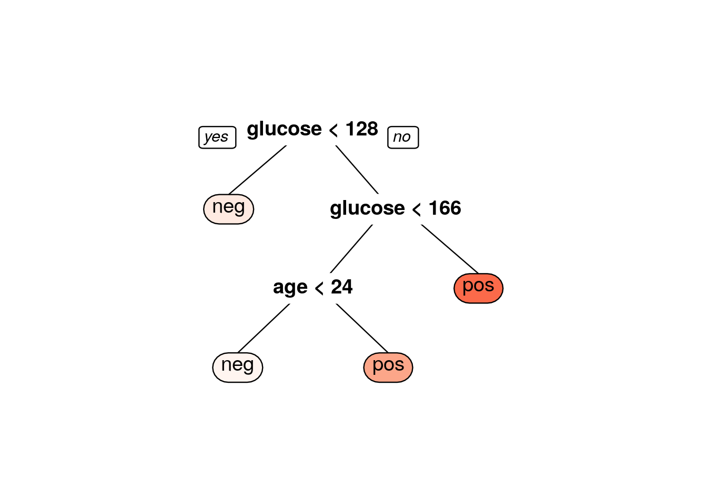
O tuneGrid é uma funcionalidade importante do pacote caret no R, utilizada para otimizar os hiperparâmetros de modelos de machine learning. Com o tuneGrid, os usuários podem especificar uma grade de hiperparâmetros que o caret irá explorar durante o treinamento do modelo. Isso permite a identificação da combinação de parâmetros que resulta no melhor desempenho do modelo, otimizando assim a precisão das previsões. Esta ferramenta é essencial para refinar modelos e garantir que eles estejam operando em sua capacidade máxima.
No caso de árvores de decisão, um hiperparâmetro importante é o parâmetro de complexidade (cp), que determina a poda da árvore. Este parâmetro ajuda a controlar o tamanho da árvore e a evitar overfitting. Ao utilizar o tuneGrid no caret para uma árvore de decisão, você pode especificar diferentes valores de cp para encontrar o que proporciona o melhor equilíbrio entre a complexidade da árvore e a capacidade de generalização do modelo.
hyper=expand.grid(
cp = seq(0.005, 1.0, 0.005) #parametros de complexidade de 0.005 até 1.0
)
tree_model <- train(diabetes ~., data = train.data, method = "rpart",tuneGrid=hyper)
##Visuzalizar as acuráciass em função do parametro de complexidade
plot(tree_model)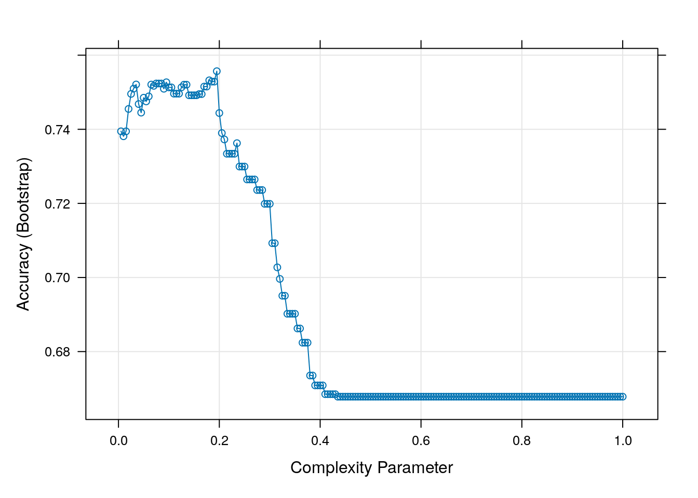
#Resultados do modelo
tree_model$bestTune cp
39 0.195tree_model$metric[1] "Accuracy"#Plotar a arvore obtida
m=tree_model$finalModel
prp(m, box.palette = "Reds", tweak = 1.2)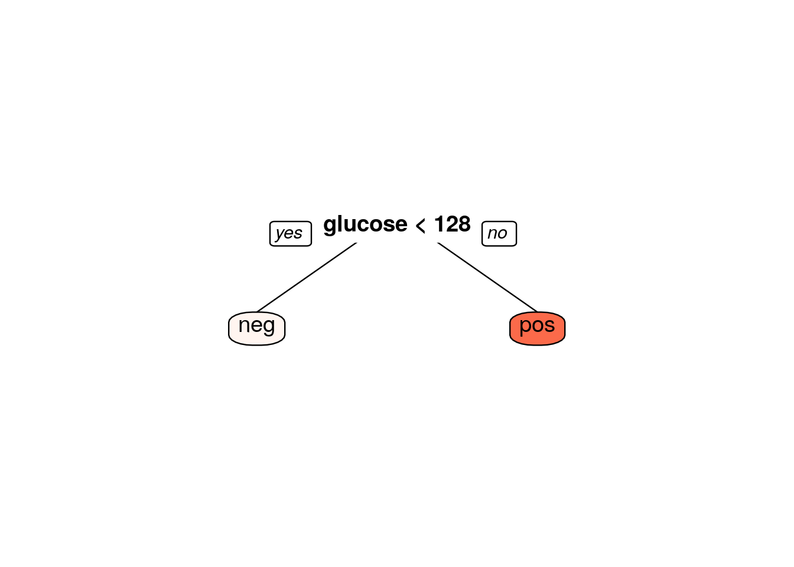
Para a validação de modelos no caret, métodos como a validação cruzada k-fold e bootstrap são disponibilizados através do argumento trControl na função train. Essas técnicas são essenciais para evitar o overfitting e avaliar a capacidade de generalização do modelo. A validação cruzada k-fold divide o conjunto de dados em k partes, treinando o modelo em k-1 partes e testando-o na parte restante. O processo é repetido para cada parte. Já o método bootstrap utiliza amostragem com reposição para criar conjuntos de treino e teste, fornecendo uma avaliação robusta do modelo.
#Definir o hiperametros
hyper=expand.grid(
cp = seq(0.005, 1.0, 0.005) # complexidade de 0.005 até 1.0
)
#VAlidação K-fold
ctrl=trainControl(method="cv",number=10)
tree_model <- train(diabetes ~., data = train.data, method = "rpart",tuneGrid=hyper,trControl = ctrl,)
##Visuzalizar as acuráciass em função do parametro de complexidade
plot(tree_model)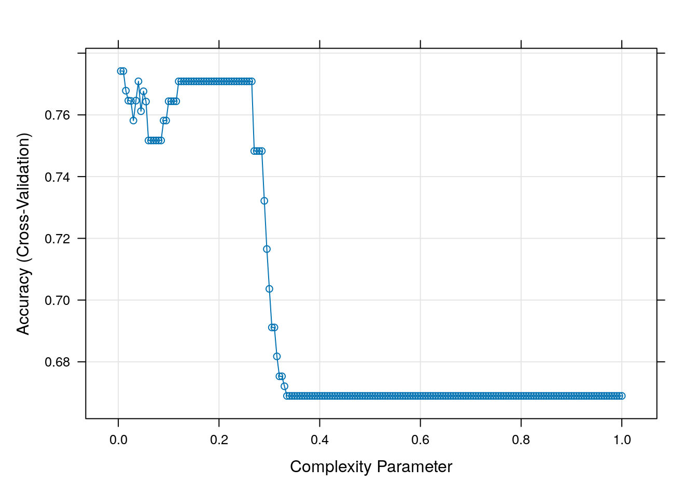
#Resultados do modelo
tree_model$bestTune cp
2 0.01tree_model$metric[1] "Accuracy"#Plotar a arvore obtida
m=tree_model$finalModel
prp(m, box.palette = "Reds", tweak = 1.2)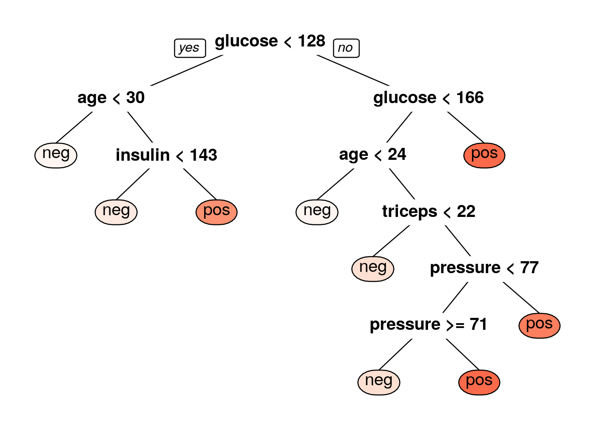
No contexto de dados desbalanceados, o caret oferece técnicas de amostragem na configuração trControl da função train. Essas técnicas incluem Sobreamostragem (para aumentar a presença da classe minoritária), Subamostragem (para diminuir a presença da classe majoritária), SMOTE (Synthetic Minority Over-sampling Technique) e ROSE (Random Over-Sampling Examples). Estas são fundamentais para assegurar que o modelo de machine learning não fique enviesado em favor da classe mais representada no conjunto de dados. A utilização adequada destas técnicas ajuda a melhorar a performance do modelo em dados desbalanceados.
#Definir o hiperametros
hyper=expand.grid(
cp = seq(0.005, 1.0, 0.005) # complexidade de 0.005 até 1.0
)
#VAlidação K-fold e sobreamostragem (Oversampling)
ctrl=trainControl(method="cv",number=10,
sampling = "up")
tree_model <- train(diabetes ~., data = train.data, method = "rpart",tuneGrid=hyper,trControl = ctrl,)
##Visuzalizar as acuráciass em função do parametro de complexidade
plot(tree_model)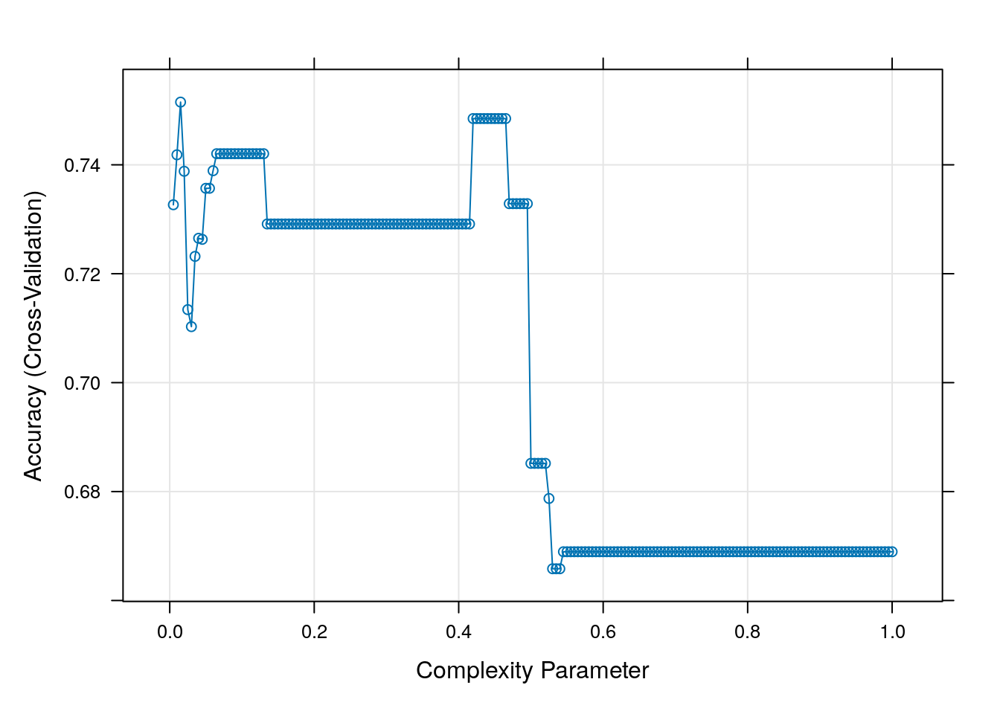
#Resultados do modelo
tree_model$bestTune cp
3 0.015tree_model$metric[1] "Accuracy"#Plotar a arvore obtida
m=tree_model$finalModel
prp(m, box.palette = "Reds", tweak = 1.2)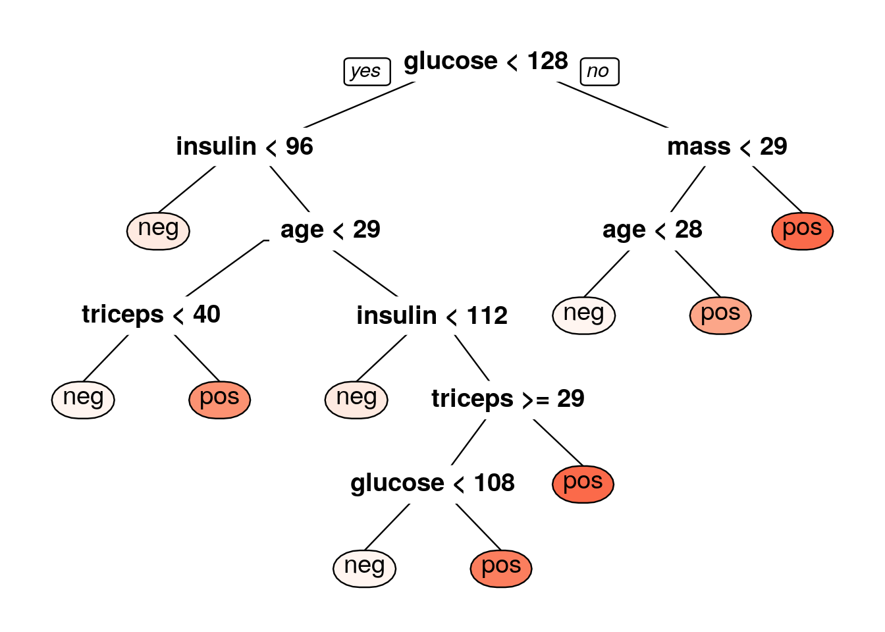
Tendências e Avanços na Machine Learning no R
Redes Neurais: No R, a implementação de redes neurais é facilitada por pacotes como
nnet(Venables and Ripley 2002) eneuralnet(Fritsch, Guenther, and Wright 2019), que permitem a criação de modelos de rede neural para uma variedade de tarefas de classificação e regressão. Essas redes são fundamentais para entender conceitos básicos de IA antes de avançar para técnicas mais complexas.Máquinas de Vetores de Suporte (SVM): R oferece suporte a SVMs por meio de pacotes como
e1071(Meyer et al. 2023), permitindo a construção de modelos eficazes para classificação e regressão, especialmente úteis em conjuntos de dados de alta dimensão.Deep Learning: O R tem visto um crescimento significativo na integração com tecnologias de Deep Learning. Pacotes como
keras(Allaire and Chollet 2023) etensorflow(Allaire and Tang 2023) permitem aos usuários do R acessar e implementar redes neurais profundas de forma eficiente. Esses pacotes trazem a potência do Deep Learning para a comunidade R, permitindo aplicações em visão computacional, reconhecimento de fala e outras áreas avançadas de IA.Aprendizado por Reforço: Uma área em expansão no R é o Aprendizado por Reforço, onde o objetivo é desenvolver modelos que aprendem a tomar decisões otimizadas. Pacotes como
ReinforcementLearning (Proellochs and Feuerriegel 2020) emarkovchain(Spedicato 2017) estão facilitando a implementação desses complexos algoritmos de aprendizado.AutoML: A automatização no processo de Machine Learning é uma tendência crescente. No R, ferramentas como o
automl(Boulangé 2020) estão simplificando o processo de seleção e otimização de modelos, tornando a Machine Learning acessível até mesmo para aqueles com menos experiência técnica.Interpretabilidade e Ética em IA: Com o aumento da complexidade dos modelos, a necessidade de interpretabilidade e considerações éticas se tornou mais premente. Pacotes como
lime(Hvitfeldt, Pedersen, and Benesty 2022)eDALEX(Biecek 2018) estão na vanguarda, fornecendo ferramentas para explicar e interpretar modelos complexos, e abordar questões éticas.Integração com Big Data: A capacidade de trabalhar com grandes volumes de dados é crucial. Pacotes como
sparklyr(Luraschi et al. 2023)oferecem integração com Apache Spark, permitindo o processamento de grandes conjuntos de dados dentro do ambiente R.-
Modelagem Bayesian: Métodos Bayesianos estão ganhando tração no R para uma ampla variedade de aplicações. Pacotes como
brms(Bürkner 2017) erstan(2023) oferecem frameworks avançados para modelagem estatística Bayesiana.Essas tendências demonstram como o R está evoluindo e se adaptando às necessidades de uma paisagem de dados em rápida mudança, mantendo-se como uma ferramenta valiosa e relevante no campo do Machine Learning.
References
Allaire, JJ, and François Chollet. 2023. “Keras: R Interface to ’Keras’.” https://CRAN.R-project.org/package=keras.
Allaire, JJ, and Yuan Tang. 2023. “Tensorflow: R Interface to ’TensorFlow’.” https://CRAN.R-project.org/package=tensorflow.
Biecek, Przemyslaw. 2018. “DALEX: Explainers for Complex Predictive Models in r” 19: 1–5. https://jmlr.org/papers/v19/18-416.html.
Boulangé, Alex. 2020. “Automl: Deep Learning with Metaheuristic.” https://CRAN.R-project.org/package=automl.
Burger, S. V. 2018. Introduction to Machine Learning with r: Rigorous Mathematical Analysis. O’Reilly Media.
Bürkner, Paul-Christian. 2017. “Brms: An r Package for Bayesian Multilevel Models Using Stan” 80. https://doi.org/10.18637/jss.v080.i01.
Chan, B. K. C. 2015. Biostatistics for Epidemiology and Public Health Using r. Springer Publishing Company.
Fritsch, Stefan, Frauke Guenther, and Marvin N. Wright. 2019. “Neuralnet: Training of Neural Networks.” https://CRAN.R-project.org/package=neuralnet.
Hvitfeldt, Emil, Thomas Lin Pedersen, and Michaël Benesty. 2022. “Lime: Local Interpretable Model-Agnostic Explanations.” https://CRAN.R-project.org/package=lime.
James, Gareth, Daniela Witten, Trevor Hastie, and Robert Tibshirani. 2023. An Introduction to Statistical Learning: With Applications in r. 2nd ed. Springer.
Kuhn, and Max. 2008. “Building Predictive Models in r Using the Caret Package.” Journal of Statistical Software 28 (5): 1–26. https://doi.org/10.18637/jss.v028.i05.
Leisch, Friedrich, and Evgenia Dimitriadou. 2021. “Mlbench: Machine Learning Benchmark Problems.”
Luraschi, Javier, Kevin Kuo, Kevin Ushey, JJ Allaire, Hossein Falaki, Lu Wang, Andy Zhang, Yitao Li, Edgar Ruiz, and The Apache Software Foundation. 2023. Sparklyr: R Interface to Apache Spark. https://CRAN.R-project.org/package=sparklyr.
Meyer, David, Evgenia Dimitriadou, Kurt Hornik, Andreas Weingessel, and Friedrich Leisch. 2023. “E1071: Misc Functions of the Department of Statistics, Probability Theory Group (Formerly: E1071), TU Wien.” https://CRAN.R-project.org/package=e1071.
Proellochs, Nicolas, and Stefan Feuerriegel. 2020. “ReinforcementLearning: Model-Free Reinforcement Learning.” https://CRAN.R-project.org/package=ReinforcementLearning.
Singh, A. K., and D. E. Allen. 2016. R in Finance and Economics: A Beginner’s Guide. World Scientific Publishing Company.
Spedicato, Giorgio Alfredo. 2017. “Discrete Time Markov Chains with r” 9. https://journal.r-project.org/archive/2017/RJ-2017-036/index.html.
Stan Development Team. 2023. “RStan: The r Interface to Stan.” https://mc-stan.org/.
Venables, W. N., and B. D. Ripley. 2002. “Modern Applied Statistics with s.” https://www.stats.ox.ac.uk/pub/MASS4/.
Wickham, Hadley. 2016. “Ggplot2: Elegant Graphics for Data Analysis.” https://ggplot2.tidyverse.org.
Zbicki, R. E., and T. M. dos Santos. 2020. Aprendizado de Máquina: Uma Abordagem Estatística. 1st ed.